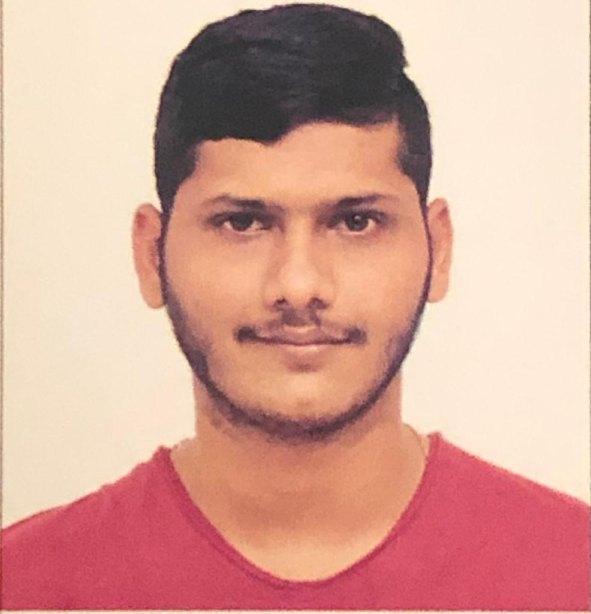

Shah Smit Kiran

Summary
I am a graduate student in Arizona State University, pursuing Master's in Computer Science.
Education
- Bachelors of Technology (B.Tech.), Computer Science and Engineering, (CGPA till 6th sem: - 8.31) Institute of Technology, Nirma University (July, 2019- May, 2023)
- Masters, Computer Science, Ira. Fulton School of Engineering, Arizona State University(Aug,2023 - Present)
Work Experience
Software Project Trainee, HealthCare Informatics, Vadodara-Gujarat
June, 2022- July, 2022
- Worked on a Resume Parser project for the extraction of useful information from the Resume.
- Goal was to extract Information like name, phone number, email address, GitHub ID, LinkedIn ID, Skills, Education, and
Work Experience.
- Learned how to do the project requirement analysis, Design, Development, testing, and Execution.
Technical Intern, ElasticRun, Pune-Maharashtra
September, 2022- January, 2023
- It is a 4-month internship starting from September, 2022 to December,2022.
- Learning New Framework named Frappe Framework which is a full stack, batteries-included, web framework written
in Python and Javascript with MariaDB as the database
Larsen and Toubro (L&T) Energy Power, Vadodara-Gujarat
January, 2023- May, 2023
- Worked as a ML-DL Intern
- Worked on a project titled water-logging detection and vegetation detection using Deep Learning.
Projects
Fake News Detection Using Machine Learning and Deep Learning Techniques
- Designed SVM(support vector machine), Naïve Bayes, Decision Tree, Random Forest, LSTM, CNN to Distinguish
between Fake and Real news.
-
The pre-processing steps involve stopwords removals, Duplication Removal, removing null values, attribution/feature
construction, Aggregation, and Normalization.
Background removal from diamond images using Image Processing or ML techniques
- The mask of the diamond images is not available so first we have to create the mask by image processing and with the
help of the mask we train the pix-to-pix Gan model..
-
Image processing includes - power-law transformation, image smoothing, convex-hull, etc. in Matlab